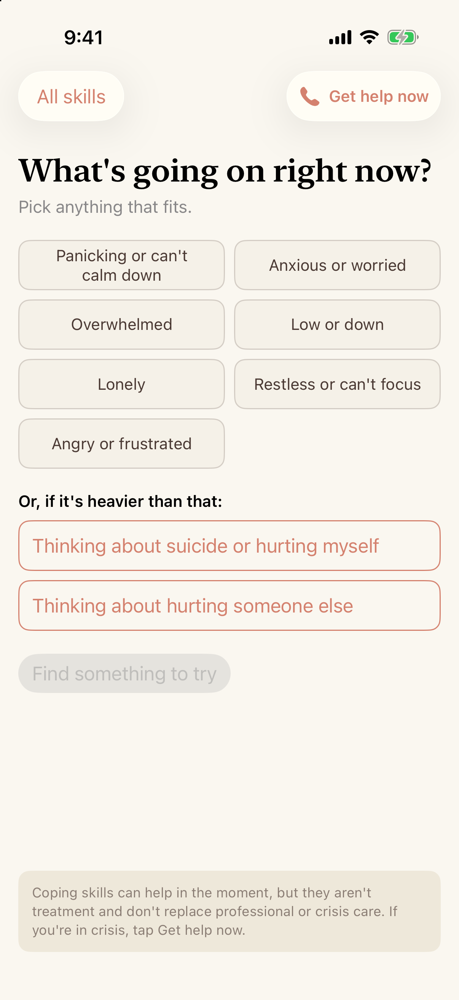
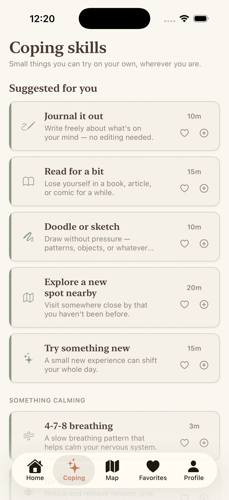

I help people get the support they need. In person, online, and through the apps I design.
I led a peer support team at a walk-in center for young adults in San Mateo County. Most days that meant running the center during my shifts, training new hires and planning the yearly events.
Then COVID hit, and I helped rebuild our services around deliveries and online groups. Our reach grew. In about a year, more than 125 young people used us, more than in a typical year in person, and most of our regulars stayed.
I'm looking for wellness program and health product roles, where that frontline experience counts.
~300young adults supported over four years
125+reached in one year of the COVID switch
3 of 3yearly events grew
Susan GadegoneSF Bay Area
Status
Open to work
Open to
Wellness program roles and health product roles
Based
San Francisco Bay Area, onsite or hybrid
Track record
About 300 young adults over four years. All three yearly events grew
Why frontline work prepares me for wellness programs.
01
Plan events around what people need
Every year I planned Back to School, Hoodie Haul and Thanksgiving Dinner for the center. The biggest grew from about 50 people the first year I ran it to about 80. Each one ran on $500 to $2,000, stretched with donations from local businesses, community organizations and individual donors, and I handled the outreach myself. After each event I looked at what fell flat and changed it the next year. All three grew.
02
Keep a program going when the format changes
When COVID closed our doors, our team moved everything to deliveries and online groups. I helped work out how the new process would run. Then I did a lot of it. I ran deliveries, led online sessions and texted youth who had gone quiet. Our reach grew. In about a year, more than 125 young people used our services, more than in a typical year in person, and most of our regulars stayed with us.
“Her depth of knowledge and thoughtful guidance were instrumental in successfully transitioning our Drop-in Center to a fully online format.”
Peer Partner, Edgewood Center
What carries overPrograms sometimes have to change format fast. I moved one from in person to delivery and online while people still needed it.
03
Train people and report what's working
As lead peer partner I trained and onboarded 5+ new peer staff, set the schedule and ran the center during my shifts. I was the person the team came to first.
I wrote the data reports our executive team used to make decisions, pulling from spreadsheets, surveys and our records system. That same program data went into a grant that was funded for our COVID response and health and wellness events.
Feedback changed what we ran. Youth loved our online game night while the center was closed. When we reopened, the ones who couldn't get to the center still wanted in, so we ran game night in person and online at the same time.
“[She] took initiative in projects that raised awareness around mental health and demonstrated leadership that strengthened the program and the team.”
What carries overI can turn what happens on the ground into something leadership can act on.
04
Look after the people doing the work
Peer support is draining work, and burnout is common. After hard days I debriefed with the peer staff. I ran regular check-ins on how people were actually doing, not just what they had done that week. And I planned events just for the team.
What carries overThis is employee wellness on a small scale, in a job where people burn out fast.
05
Design wellness apps
Since 2023 I've been building wellness apps and learning product through programs like SheBuilds. This year I built Take Care, for families sharing the care of someone with Parkinson's, and then Roam. In 2024, Stanford's AI for Good program picked me as 1 of 30 from 230 applicants. There I came up with MindMate and led our team, and we made the top 8 that pitched to investors. The same year I won a Neolth Innovation Challenge All Star Award for a mental health toolkit concept. It became the starting point for Roam.
Two walk-in centers where young adults aged 18 to 25 could come in for mental health and everyday support. I was the lead peer partner, working alongside clinicians and case managers. Peer partners are people with lived experience navigating public systems of care, such as child welfare, juvenile justice, or mental health services.
Reach
About 300 young adults supported over four years
Role
Lead peer partner. Trained 5+ new peer staff, set the schedule and gave input on hiring
Worked with
Clinicians, case managers, San Mateo County teams and community partners
Tools
Excel, Google Sheets, survey tools and the agency's records system
Training
Trauma-informed care. Previously certified in Mental Health First Aid and CPR
MindMate
B / Stanford AI for Good 2024 / Product Manager
An AI companion for young people aged 13 to 25, with coping skills drawn from CBT, DBT and WRAP and matched to how they're doing. I came up with the idea and led our team through the program. We made the top 8 and pitched to investors.
My part
The idea, the mission and user story, the app flow, how we'd measure success, and the pitch itself
How we'd measure it
A Feel Good Index built from engagement, fewer negative symptoms, retention and satisfaction, and well-being scores over time
Where it stands
A pitch with prototype screens, not a launched product
Caregiving apps tend to forget the caregiver. Take Care is for families looking after someone with Parkinson's, and it makes room for their own wellbeing next to the day's tasks. The video walks through both.
Roam is a mental health resource finder for San Francisco and the East Bay. It helps you find free and low-cost places to go. When going somewhere isn't realistic, it offers coping skills you can try right now, based on how you're feeling today. Crisis help is always one tap away.


How I'm building Roam
The problem
Resource lists are long, and a hard day is the wrong time to sort through one.
My decisions
Focus on free and low-cost places. Personalize to how someone feels today. Offer a coping skill when going somewhere isn't realistic. Keep crisis help one tap away.
Where the list comes from
Public directories. Before anyone relies on it, I plan to confirm each listing myself, including cost, hours and whether it is still open. I haven't done that yet.
What I'd measure first
Whether people actually go to a place Roam suggests. For coping skills, how someone feels before and after.
Where it stands
A working prototype. Nobody outside the build has used it yet.
I also co-led a team at the Make SF Better Hackathon in 2026, where we designed a free legal aid assistant for San Francisco residents.
03Contact
Hiring for a wellness program or digital health team? Let's talk.
I'm looking for wellness program roles, from coordinator to manager, and associate product roles in digital health. I'm in the San Francisco Bay Area, open to onsite or hybrid, and available to start now. Email is the fastest way to reach me.